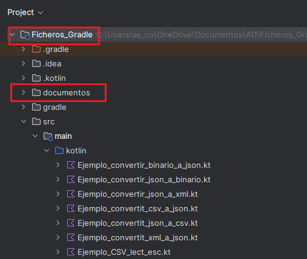
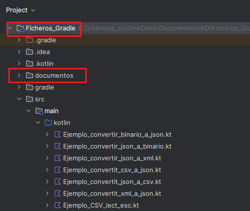

Ficheros de intercambio
En el desarrollo de aplicaciones, es habitual trabajar con datos almacenados o transmitidos en distintos formatos de ficheros. La conversión entre estos formatos permite intercambiar información entre sistemas heterogéneos, integrarse con APIs, facilitar la persistencia de datos o adaptarse a requisitos específicos.
¿Cuándo utilizar cada uno de ellos?
- JSON y XML: para APIs REST, configuración, exportación de datos.
- CSV: para importar/exportar datos desde hojas de cálculo.
Estos formatos no solo permiten guardar la información de forma más organizada y legible, sino que requieren utilizar librerías específicas para leer y escribir.
En los siguientes apartados veremos cómo trabajar con cada uno de estos formatos, qué librerías se utilizan en Kotlin para manipularlos, y cómo adaptar nuestras clases y funciones para poder persistir y recuperar objetos fácilmente desde cada tipo de fichero.
üîπData Class
Aunque este tipo de ficheros están formados por texto, los programas no deberían trabajar directamente con texto, sino con datos estructurados.
Por este motivo, toda la lectura y escritura de ficheros de intercambio se realizará mediante objetos, y no manipulando directamente cadenas de texto. Cuando leemos un fichero CSV, JSON o XML leemos texto pero, el objetivo final es obtener información con significado. Para representar correctamente esa información dentro del programa, utilizaremos data class, que nos permiten modelar los datos de forma clara y segura.
Define qué información tiene un objeto y de qué tipo es cada dato: El data class de una línea CSV se repreentaría así:
| CSV | Data Class |
|---|---|
| nombre;nota Lucía;28 |
data class Alumno( val nombre: String, val nota: Int ) |
Ejemplos
Para probar y organizar los ejemplos propuestos en esta parte del temario, crearemos un proyecto llamado Ficheros_Gradle, en el que incluiremos Gradle como herramienta de construcción. Los ejemplos los iremos creando directamente en la carpeta src/main/Kotlin.
Crearemo también la carpeta documentos, donde iremos dejando los ficheros geneados en los distintos ejemplos.
 |
|
üîπDependencias Gradle
En este apartado vamos a desarrollar una aplicación en Kotlin que gestione la lectura y escritura de datos utilizando distintos formatos de archivo estructurado: CSV, JSON y XML.
Para facilitar el uso de librerías externas que nos ayuden a trabajar con estos formatos, vamos a utilizar Gradle como herramienta de construcción del proyecto. Gradle nos permitirá:
- Gestionar las dependencias necesarias.
- Automatizar el proceso de compilación y ejecución.
- Organizar el proyecto de forma profesional y escalable.
Dependencias que utilizaremos:
| Formato | Librería | Propósito principal |
|---|---|---|
| CSV | OpenCSV, Kotlin-CSV | Lectura y escritura de archivos separados por comas o punto y coma |
| JSON | kotlinx.serialization | Conversión entre objetos Kotlin y texto JSON (ligero, multiplataforma, oficial) |
| JSON | Jackson | Conversión entre objetos Java/Kotlin y JSON (muy usado en backend Java) |
| XML | javax.xml (DOM API) | Construcción y manipulación manual de documentos XML (bajo nivel, detallado) |
| XML | Jackson | Conversión directa entre objetos y XML (usando anotaciones, más sencillo) |
En el fichero build.gradle.kts se incluirán los plugins y dependencias necesarias:
plugins {
kotlin("jvm") version "2.0.20"
kotlin("plugin.serialization") version "2.0.20"
application
}
repositories {
mavenCentral()
}
dependencies {
// Kotlin estándar
implementation(kotlin("stdlib"))
// Serialización JSON
implementation("org.jetbrains.kotlinx:kotlinx-serialization-json:1.6.3")
// OpenCSV para CSV
implementation("com.opencsv:opencsv:5.9")
//Kotlin-CSV
implementation("com.github.doyaaaaaken:kotlin-csv-jvm:1.9.1")
// librería JDOM2
implementation("org.jdom:jdom2:2.0.6")
// librerias jackson
implementation("com.fasterxml.jackson.module:jackson-module-kotlin:2.17.0")
implementation("com.fasterxml.jackson.dataformat:jackson-dataformat-xml:2.17.0")
}
üîπFicheros CSV
El formato CSV es un archivo de texto donde los valores están separados por comas u otro delimitador (como punto y coma), muy usado para intercambiar datos entre hojas de cálculo, sistemas contables, etc.
La lectura y escrituara de un archivo CSV se puede hacer de tres formas:
- Sin utilizar librerías y mediante la lectura línea a línea + split().
- Con la librería OpenCSV.
- Con la librería Kotlin-CSV.
En este bloque de contenidos vamos a trabajar con distintos programas de ejemplo y en todos estos casos, los datos representan siempre el mismo tipo de información: alumnos.
Alumnos.csv
nombre:nota
Lucía;9
Carlos;8
Elena;10
La data class Alumno correspondiente será:
data class Alumno(
val nombre: String,
val nota: Int
)
üìå Esta clase la crearemos fuera fuera de los programas de ejemplo para poder reutilizarla desde cualquier otro main.
üñ•Ô∏è 1- Sin librer√≠as: lectura l√≠nea a l√≠nea + split()
Ejemplo_CSV_lect_esc.kt
import java.nio.file.Files
import java.nio.file.Paths
import java.nio.file.StandardOpenOption
fun main() {
val ruta = Paths.get("documentos/alumnos.csv")
// 1. Crear contenido CSV (con cabecera)
val lineas = listOf(
"nombre;nota", // cabecera
"Lucía;9",
"Carlos;8",
"Elena;10"
)
// 2. Escribir el archivo
Files.write(
ruta,
lineas,
StandardOpenOption.CREATE,
StandardOpenOption.TRUNCATE_EXISTING
)
println("Archivo CSV creado: ${ruta.toAbsolutePath()}")
// 3. Leer el archivo y convertir a objetos Alumno
val lineasLeidas = Files.readAllLines(ruta)
val alumnos = mutableListOf<Alumno>()
for (i in lineasLeidas.indices) {
// Saltamos la cabecera (línea 0)
if (i == 0) continue
val linea = lineasLeidas[i]
val partes = linea.split(";")
if (partes.size == 2) {
val nombre = partes[0]
val nota = partes[1].toInt()
val alumno = Alumno(nombre, nota)
alumnos.add(alumno)
} else {
println("Línea mal formada: $linea")
}
}
// 4. Usar los objetos
println("\nListado de alumnos:")
for (alumno in alumnos) {
println("Alumno: ${alumno.nombre}, Nota: ${alumno.nota}")
}
}
üñ•Ô∏è 2- Con OpenCSV
Nota
OpenCSV fue desarrollado antes de que java.nio.file.Path se introdujera en Java 7, y sus métodos aún usan la API antigua (java.io.*), como FileReader y FileWriter.
Lectura con OpenCSV
| Clase / Método | ¿Qué hace? | Ejemplo básico |
|---|---|---|
CSVReader(FileReader) |
Crea un lector de archivos CSV. | val reader = CSVReader(FileReader("archivo.csv")) |
readAll() |
Lee todo el contenido como List<Array<String>>. |
val filas = reader.readAll() |
readNext() |
Lee una fila como Array<String>. |
val fila = reader.readNext() |
close() |
Cierra el lector. | reader.close() |
CSVReaderBuilder(...) |
Permite configurar el lector: separador, comillas, salto de línea, etc. | CSVReaderBuilder(FileReader(...)).withSeparator(';') |
withSkipLines(n) |
Omite las primeras n líneas (útil para saltar cabeceras). |
withSkipLines(1) |
build() |
Construye el lector configurado. | build() |
Escritura con OpenCSV
| Clase / Método | ¿Qué hace? | Ejemplo básico |
|---|---|---|
CSVWriter(FileWriter) |
Crea un escritor CSV básico. | val writer = CSVWriter(FileWriter("archivo.csv")) |
writeNext(Array<String>) |
Escribe una línea al CSV. | writer.writeNext(arrayOf("Ana", "30")) |
writeAll(List<Array<String>>) |
Escribe múltiples filas al CSV. | writer.writeAll(listaFilas) |
flush() |
Fuerza la escritura del buffer. | writer.flush() |
close() |
Cierra el escritor. | writer.close() |
CSVWriterBuilder(...) |
Permite configurar el escritor: delimitador, comillas, escape, etc. | CSVWriterBuilder(FileWriter(...)).withSeparator(';') |
withQuoteChar(c) |
Define el carácter de comillas (por defecto es "). |
withQuoteChar(CSVWriter.NO_QUOTE_CHARACTER) |
withEscapeChar(c) |
Define el carácter de escape (por defecto \). |
withEscapeChar('\\') |
withLineEnd(e) |
Define el carácter de fin de línea. | withLineEnd("\n") |
build() |
Construye el escritor configurado. | build() |
CSVReader y CSVWriter son clases Java, pensadas originalmente para Java, aunque se pueden usar desde Kotlin.
Ejempo_OpenCSV_lect_esc.kt
import com.opencsv.CSVReader
import com.opencsv.CSVWriter
import java.io.FileReader
import java.io.FileWriter
import java.nio.file.Paths
fun main() {
val ruta = Paths.get("documentos/alumnos.csv").toString()
// 1. Escribir el archivo CSV (con cabecera)
CSVWriter(FileWriter(ruta)).use { writer ->
writer.writeNext(arrayOf("nombre", "nota")) //cabecera
writer.writeNext(arrayOf("Lucía", "9"))
writer.writeNext(arrayOf("Carlos", "8"))
writer.writeNext(arrayOf("Elena", "10"))
}
println("Archivo CSV creado: $ruta")
// 2. Leer el archivo CSV y convertir a objetos Alumno
val alumnos = mutableListOf<Alumno>()
CSVReader(FileReader(ruta)).use { reader ->
val filas = reader.readAll()
for (i in filas.indices) {
// Saltamos la cabecera
if (i == 0) continue
val fila = filas[i]
if (fila.size == 2) {
val nombre = fila[0]
val nota = fila[1].toInt()
alumnos.add(Alumno(nombre, nota))
} else {
println("Línea mal formada: ${fila.joinToString(";")}")
}
}
}
// 3. Usar los objetos
println("\nListado de alumnos:")
for (alumno in alumnos) {
println("Alumno: ${alumno.nombre}, Nota: ${alumno.nota}")
}
}
Nota
El archivo CSV generado sin librerías es un archivo de texto plano con el separador ;, pero sin comillas y sin escape. En cambio, el fichero CSV generado con OpenCSV sigue el estantar CSV (RFC 4180) que incluye encerrar los campos entre comillas dobles, si el campo contiene el separador (como ; o ,).
üñ•Ô∏è 3- Con Kotlin-CSV
Nota
la librería kotlin-csv también utiliza java.io.File para muchas de sus operaciones principales, aunque de una forma un poco más moderna y flexible que OpenCSV.
Tradicionalmente, en entornos Java se ha utilizado la librería OpenCSV para leer y escribir este tipo de archivos, debido a su potencia y versatilidad, sin embargo, cuando desarrollamos en Kotlin, existen alternativas más modernas y adaptadas al lenguaje. Una de ellas es kotlin-csv, una librería ligera y expresiva diseñada específicamente para aprovechar las ventajas de Kotlin, como las expresiones lambda, la sintaxis DSL y el trabajo con secuencias (sequences) y corrutinas.
csvWriter y csvReader no son clases, sino funciones DSL propias de Kotlin
| Tipo | Método | Ejemplo mínimo |
|---|---|---|
| Lectura | readAll(File) |
val filas = csvReader().readAll(File("alumnos.csv")) |
readAllWithHeader(File) |
val datos = csvReader().readAllWithHeader(File("alumnos.csv")) |
|
open { readAllAsSequence() } |
csvReader().open("alumnos.csv") { readAllAsSequence().forEach { println(it) } } |
|
| Escritura | writeAll(data, File) |
csvWriter().writeAll(listOf(listOf("Lucía", "9")), File("salida.csv")) |
writeRow(row, File) |
csvWriter().writeRow(listOf("Carlos", "8"), File("salida.csv")) |
|
writeAllWithHeader(data, File) |
csvWriter().writeAllWithHeader(listOf(mapOf("nombre" to "Elena", "nota" to "10")), File("salida.csv")) |
|
| Configuración | delimiter, quoteChar, etc. |
csvReader { delimiter = ';' } |
Ejempo_KotlinCSV_lect_esc.kt
import com.github.doyaaaaaken.kotlincsv.dsl.csvReader
import com.github.doyaaaaaken.kotlincsv.dsl.csvWriter
import java.io.File
import java.nio.file.Paths
fun main() {
val ruta = Paths.get("documentos/alumnos.csv").toString()
// Escribir con cabecera
csvWriter().open(ruta) {
writeRow(listOf("nombre", "nota")) //cabecera
writeRow(listOf("Lucía", "9"))
writeRow(listOf("Carlos", "8"))
writeRow(listOf("Elena", "10"))
}
// Leer con cabecera (como Map)
val filas: List<Map<String, String>> = csvReader().readAllWithHeader(File(ruta))
val alumnos = filas.mapNotNull { fila ->
val nombre = fila["nombre"]
val notaStr = fila["nota"]
if (nombre != null && notaStr != null) Alumno(nombre, notaStr.toInt()) else null
}
println("Listado de alumnos:")
alumnos.forEach { println("Alumno: ${it.nombre}, Nota: ${it.nota}") }
}
üîπFicheros JSON
En muchas aplicaciones modernas, los datos deben almacenarse o intercambiarse en formato JSON (JavaScript Object Notation), un formato ligero y legible ampliamente utilizado en APIs, configuraciones, bases de datos NoSQL y almacenamiento persistente.
Estructura
La estructura de los ficheros JSON (JavaScript Object Notation) se basa en una sintaxis sencilla y legible para representar datos estructurados. JSON está formado por pares clave-valor y/o listas ordenadas de valores.
Ejemplo: Información sobre un alumno.
"alumno": {
"nombre": "María",
"edad": 20,
"activo": true,
"notas": [8.5, 9.2, 7.8],
"direccion": {
"calle": "Av. del Sol",
"ciudad": "Valencia",
"codigoPostal": 46001}
}
Elementos principales
- Objeto: Conjunto de pares clave-valor, delimitado por {}: "alumno"
- Array: Lista ordenada de valores, delimitada por []: "notas"
- Clave: Siempre entre comillas dobles: "nombre"
- Valor: Puede ser: string, número, booleano, null, objeto o array: "María", "Valencia", 20, true, etc.
Librerías
En Kotlin, existen varias librerías que permiten trabajar con ficheros JSON de forma sencilla:
| Librería | Lenguaje base | Uso recomendado | Multiplataforma | Notas destacadas |
|---|---|---|---|---|
kotlinx.serialization |
Kotlin | Kotlin puro y Kotlin Multiplatform | ✅ Sí | Ligera, rápida y con soporte oficial de JetBrains |
Jackson |
Java | Proyectos Java/Kotlin con Spring Boot | ❌ No | Muy flexible y poderosa |
Gson |
Java | Aplicaciones Android o proyectos simples | ❌ No | Fácil de usar, pero más lenta y menos segura |
org.json |
Java | Scripts rápidos o aprendizaje | ❌ No | Acceso directo a claves sin clases de datos |
Cuando trabajamos con ficheros JSON en Kotlin, existen dos formas de acceder a los datos, tratarlos como texto plano o estructuras genéricas, o convertirlos directamente en objetos Kotlin. Aunque la primera opción es posible y útil en ciertos casos, trabajar sin conversión implica mayor esfuerzo manual, riesgo de errores en los nombres de claves y ausencia de validación de tipos. Las librerías kotlinx.serialization y Jackson nos permiten convertir los ficheros JSON a objetos y viceversa.
Esto proporciona importantes ventajas:
✔️ Validación automática de la estructura del JSON.
✔️ Conversión directa entre JSON y objetos Kotlin.
✔️ Código más limpio y mantenible.
✔️ Mayor seguridad de tipos, detectando errores en tiempo de compilación.
üîπ kotlinx.serialization
kotlinx.serialization es la librería oficial de serialización de Kotlin, desarrollada por JetBrains, que permite convertir objetos Kotlin a y desde diferentes formatos como JSON, ProtoBuf, CBOR, XML (experimental), entre otros.
Como ya vimos en el apartado anterior, la serialización es el proceso de convertir los datos utilizados por una aplicación a un formato que pueda transferirse por red o almacenarse en una base de datos o archivo. A su vez, la deserialización es el proceso inverso: leer datos de una fuente externa y convertirlos en un objeto de tiempo de ejecución.
Nota
Todas las bibliotecas de serialización de Kotlin pertenecen al grupo org.jetbrains.kotlinx:grupo. Sus nombres empiezan con kotlinx-serialization- y tienen sufijos que reflejan el formato de serialización: org.jetbrains.kotlinx:kotlinx-serialization-json
Clases y funciones clave de kotlinx.serialization.json
| Clase / Función | Tipo | Descripción |
|---|---|---|
Json |
Clase | Punto de entrada principal para serializar y deserializar en JSON |
JsonObject |
Clase | Representa un objeto JSON {} como un Map<String, JsonElement> |
JsonArray |
Clase | Representa un array JSON [], como una lista de JsonElement |
JsonElement |
Clase | Superclase abstracta para cualquier valor JSON |
JsonPrimitive |
Clase | Representa valores primitivos JSON (string, número, booleano, null) |
JsonNull |
Objeto | Representa el valor null en JSON |
JsonLiteral |
Clase | Subtipo de JsonPrimitive que representa valores literales (string/num) |
JsonObjectBuilder |
Clase DSL | Permite construir objetos JSON usando buildJsonObject { ... } |
JsonArrayBuilder |
Clase DSL | Permite construir arrays JSON usando buildJsonArray { ... } |
buildJsonObject { ... } |
Función | Crea un JsonObject de forma declarativa |
buildJsonArray { ... } |
Función | Crea un JsonArray de forma declarativa |
parseToJsonElement(...) |
Función | Convierte un String en JsonElement (analiza el JSON sin clase) |
encodeToJsonElement(...) |
Función | Convierte un objeto Kotlin en JsonElement usando un Json |
decodeFromJsonElement(...) |
Función | Convierte un JsonElement a un objeto Kotlin |
jsonPrimitive |
Propiedad | Accede al valor primitivo dentro de un JsonElement |
jsonObject |
Propiedad | Convierte un JsonElement a JsonObject (si es compatible) |
jsonArray |
Propiedad | Convierte un JsonElement a JsonArray (si es compatible) |
Métodos principales de kotlinx.serialization
Son funciones generales que no están dentro del paquete .json, pero que se usan muy a menudo en la serialización en Kotlin.
| Método de kotlinx.serialization | ¿Qué hace? | Ejemplo básico |
|---|---|---|
Json.encodeToString(objeto) |
Convierte un objeto Kotlin a una cadena JSON. | Json.encodeToString(persona) |
Json.encodeToString(serializer, obj) |
Igual que el anterior pero especificando el serializador. | Json.encodeToString(Persona.serializer(), persona) |
Json.decodeFromString(json) |
Convierte una cadena JSON a un objeto Kotlin. | Json.decodeFromString<Persona>(json) |
Json.decodeFromString(serializer, s) |
Igual que el anterior pero con el serializador explícito. | Json.decodeFromString(Persona.serializer(), json) |
Json.encodeToJsonElement(objeto) |
Convierte un objeto a un árbol JsonElement. |
val elem = Json.encodeToJsonElement(persona) |
Json.decodeFromJsonElement(elem) |
Convierte un JsonElement a objeto Kotlin. |
val persona = Json.decodeFromJsonElement<Persona>(elem) |
Json.parseToJsonElement(string) |
Parsea una cadena JSON a un árbol JsonElement sin mapear. |
val elem = Json.parseToJsonElement(json) |
Requisitos para usar kotlinx.serialization en Gradle (JSON)
- Activar el plugin de Kotlin serialization en build.gradle.kts
plugins { kotlin("jvm") version "2.0.20" kotlin("plugin.serialization") version "2.0.20" application } dependencies { implementation("org.jetbrains.kotlinx:kotlinx-serialization-json:1.6.3") }
⚠️ Asegúrate de usar una versión compatible con tu Kotlin. Por ejemplo, 1.6.3 funciona bien con Kotlin 2.0.20.
- Anota tus clases con @Serializable
import kotlinx.serialization.Serializable @Serializable data class Objeto(val clave1: String, val clave2: Int)
Nota
En Kotlin, las data class están diseñadas para modelar datos puros. La palabra clave data no es obligatoria para la serialización, pero se usa por buena práctica y para obtener funcionalidades adicionales que son muy útiles, especialmente cuando trabajas con objetos de datos, como toString(), equals(), hashCode(), copy()..
- Utiliza el objeto Json para serializar/deserializar
Para serializar una instancia de esta clase llamamos a Json.encodeToString() y para deserializar llamamos a Json.decodeFromString().
import kotlinx.serialization.json.Json
import kotlinx.serialization.encodeToString
import kotlinx.serialization.decodeFromString
fun main() {
val obj = Objeto("María", 22)
val json = Json.encodeToString(obj)
println("JSON: $json")
val obj = Json.decodeFromString<Objeto>(json)
println("Objeto: $obj")
}
También puedes serializar colecciones de objetos, como listas, en una sola llamada:
val dataList = listOf(Objeto("María", 22), Objeto("Carlos", 30), Objeto("Ana", 18))
val jsonList = Json.encodeToString(dataList)
El resultado sería:
[
{"nombre":"Lucía","edad":28},
{"nombre":"Carlos","edad":30},
{"nombre":"Elena","edad":18}
]
Ejemplo de lectura y escritura de un archivo json
Estructura del proyecto:
Ficheros_Gradle/
├── documentos/
| └──persona.json
└── src/
└── main/
└── kotlin/
└── Ejemplos/
└──Ejemplo_JSON_KSerialization.kt
└──Persona.kt
1- El fichero json que vamos a generar será el que tenga el siguiente contenido. Es un objeto JSON que contiene dos atributos, nombre y edad, representando una persona.:
{
"nombre": "Lucía",
"edad": 28
}
2- Crea la Data Class Persona.kt con la misma estructura del archivo fuera del programa de ejemplo para poder reutilizarla desde cualquier otro main.
Anota la clase como serializable.
import kotlinx.serialization.Serializable
@Serializable
data class Persona(val nombre: String, val edad: Int)
üñ•Ô∏è Ejemplo_JSON_KSerialization.kt
import kotlinx.serialization.encodeToString
import kotlinx.serialization.json.*
import java.nio.file.Files
import java.nio.file.Paths
import java.io.IOException
import java.nio.file.Files.readString
fun escribirJSON() {
val ruta = Paths.get("documentos/persona.json")
val persona = Persona("Lucía", 28)
try {
// Convertir a String con formato bonito
val jsonString = Json { prettyPrint = true }.encodeToString(persona)
// Crear carpeta si no existe
Files.createDirectories(ruta.parent)
// Escribir JSON en archivo
Files.writeString(ruta, jsonString)
println("Archivo JSON creado en: ${ruta.toAbsolutePath()}")
println("Contenido:\n$jsonString")
} catch (e: IOException) {
println("⚠️ Error de entrada/salida: ${e.message}")
} catch (e: Exception) {
println("⚠️ Error inesperado: ${e.message}")
}
}
fun leerJSON(){
val rutaEntrada = Paths.get("documentos/persona.json")
// --- Lectura segura ---
try {
if (!Files.exists(rutaEntrada)) {
println("El archivo no existe: $rutaEntrada")
return
}
val contenidoJson = readString(rutaEntrada)
val persona = Json.decodeFromString<Persona>(contenidoJson)
println("Lectura correcta: $persona")
} catch (e: IOException) {
println("Error de E/S: ${e.message}")
}
}
fun main() {
escribirJSON()
leerJSON()
}
üîπJackson (JSON)
Jackson es la librería más usada en Java para JSON. Muchos frameworks Java lo usan por defecto (Spring Boot, Micronaut, Quarkus, etc.). Conocerlo permite trabajar con APIs externas, backends y entornos mixtos (Java + Kotlin).
Mientras que kotlinx.serialization está centrado en JSON y formatos binarios (CBOR, ProtoBuf...), Jackson también soporta XML, YAML, CSV de forma unificada, además, si necesitas convertir entre formatos (XML ↔ JSON), Jackson es ideal, por lo que es importante cononcer ambas librerías para entender los proyectos Kotlin puros y modernos (kotlinx.serialization) y también los proyectos reales empresariales con Jackson.
Clases esenciales para trabajar con JSON usando Jackson
| Clase / interfaz | Para qué sirve |
|---|---|
| ObjectMapper | La clase principal para leer y escribir JSON |
| File (de java.io) | Representa el archivo físico JSON |
| Tu data class en Kotlin | Define la estructura del objeto a leer o escribir |
| Método Jackson | ¿Qué hace? | Ejemplo básico |
|---|---|---|
readValue(String, Class) |
Convierte una cadena JSON a un objeto Kotlin o Java. | mapper.readValue(json, Persona::class.java) |
readValue(File, Class) |
Convierte un archivo JSON a un objeto. | mapper.readValue(File("persona.json"), Persona::class.java) |
readTree(String) |
Lee un JSON como árbol (JsonNode) sin mapear a clase. |
val node = mapper.readTree(json) |
writeValue(File, Object) |
Escribe un objeto como JSON en un archivo. | mapper.writeValue(File("salida.json"), persona) |
writeValueAsString(Object) |
Convierte un objeto en una cadena JSON. | val json = mapper.writeValueAsString(persona) |
writeValueAsBytes(Object) |
Convierte un objeto en un array de bytes JSON. | val bytes = mapper.writeValueAsBytes(persona) |
writerWithDefaultPrettyPrinter() |
Devuelve un escritor que formatea (indentado) el JSON. | mapper.writerWithDefaultPrettyPrinter().writeValue(...) |
Anotaciones en Jackson
Las anotaciones en Jackson (como @JsonIgnoreProperties, @JsonProperty, etc.) no siempre son necesarias, pero se usan para resolver problemas comunes al serializar o deserializar objetos.
| Caso | ¿Anotación necesaria? |
|---|---|
| JSON coincide exactamente con la data class | ❌ No |
| JSON tiene campos extra | ✅ Sí (@JsonIgnoreProperties) |
| Nombres distintos en JSON | ✅ Sí (@JsonProperty) |
| Quieres ocultar campos | ✅ Sí (@JsonIgnore) |
| Anotación | ¿Para qué sirve? |
|---|---|
| @JsonProperty("x") | Mapear nombres distintos entre JSON y la clase |
| @JsonIgnore | Excluir una propiedad al serializar/deserializar |
| @JsonIgnoreProperties(ignoreUnknown = true) | Evitar errores por campos JSON no mapeados |
| @JsonInclude(...) | Excluir valores nulos o vacíos en el JSON |
Ejemplo de lectura y escritura con Jackson
Dependencia Gradle:
dependencies {
implementation("com.fasterxml.jackson.module:jackson-module-kotlin:2.17.0")
}
Nota
⚠️ Con la librería Jackson no es obligatorio usar la anotación @Serializable. Jackson puede trabajar directamente con clases normales de Kotlin.
En este caso, seguiremos utilizando la data class Persona, que ya está anotada con @Serializable porque se usa también en ejemplos con kotlinx.serialization.
üëâ Esta anotaci√≥n no afecta a Jackson ni provoca errores, por lo que la misma clase se puede reutilizar sin problemas en ambos casos.
import kotlinx.serialization.Serializable
@Serializable
data class Persona(val nombre: String, val edad: Int)
üñ•Ô∏è Ejemplo_JSON_jackson.kt
import com.fasterxml.jackson.module.kotlin.jacksonObjectMapper
import com.fasterxml.jackson.module.kotlin.readValue
import java.io.File
fun escribirJson() {
val mapper = jacksonObjectMapper()
val persona = Persona("Mario", 35)
val archivo = File("documentos/persona.json")
mapper.writerWithDefaultPrettyPrinter().writeValue(archivo, persona)
println("JSON generado correctamente en: ${archivo.absolutePath}")
}
fun leerJson() {
val mapper = jacksonObjectMapper()
val archivo = File("documentos/persona.json")
val persona = mapper.readValue<Persona>(archivo)
println("Lectura correcta: ${persona.nombre} tiene ${persona.edad} años.")
}
fun main() {
escribirJson()
leerJson()
}
Ejemplo de lectura y escritura de un array (lista) de elementos con Jackson
Fichero JSON compuesto por una lista de elementos
Si el fichero JSON contiene un array ([...]), es decir, una lista de objetos, entonces debemos indicar explícitamente que queremos leer un List<Objeto>.
[
{
"nombre" : "Lucía",
"edad" : 28
}, {
"nombre" : "Pepe",
"edad" : 30
}, {
"nombre" : "Ana",
"edad" : 50
}, {
"nombre" : "Juan",
"edad" : 12
}
]
üñ•Ô∏è Ejemplo_listaJSON_jackson.kt
import com.fasterxml.jackson.module.kotlin.jacksonObjectMapper
import com.fasterxml.jackson.module.kotlin.readValue
import java.io.File
fun escribirListaJson() {
val mapper = jacksonObjectMapper()
val personas = listOf(
Persona("Lucía", 28),
Persona("Pepe", 30),
Persona("Ana", 50),
Persona("Juan", 12)
)
val archivo = File("documentos/lista_personas.json")
mapper.writerWithDefaultPrettyPrinter().writeValue(archivo, personas)
println("JSON generado correctamente en: ${archivo.absolutePath}")
}
fun leerListaJson() {
val mapper = jacksonObjectMapper()
val archivo = File("documentos/lista_personas.json")
val lista=mapper.readValue<List<Persona>>(archivo)
for (p in lista) {
println("${p.nombre} tiene ${p.edad} años.")
}
}
fun main() {
escribirListaJson()
leerListaJson()
}
üîπFicheros XML
Un fichero XML (eXtensible Markup Language) es un formato de texto estructurado diseñado para almacenar y transportar datos de forma legible tanto para humanos como para máquinas.
Tiene una estructura jerárquica basada en etiquetas, similar al HTML, pero orientada al contenido de datos, no a la presentación. XML permite guardar objetos o estructuras de datos en un archivo de texto legible.
Estructura
<raiz> <!-- Elemento raíz obligatorio -->
<elemento>
<subelemento>valor</subelemento>
</elemento>
<otroElemento atributo="valor" />
</raiz>
La mejor forma de trabajar con XML en Kotlin es utlizar la librería DOM (Document Object Model) o JDOM2, que permiten crear, leer y modificar fácilmente estructuras XML.
- DOM -> Estándar Java, sin dependencias. Requiere muchas líneas de código para hacer algo relativamente simple.
- JDOM2 -> API más amigable para desarrolladores. Requiere añadir una librería externa.
üîπJDOM2
JDOM2 es una librería ligera y fácil de usar para trabajar con XML de forma manual y controlada, ideal cuando no necesitas solo convertir directamente a objetos, sino manipular el contenido de manera estructurada.
| Clase | ¿Para qué sirve? |
|---|---|
| SAXBuilder | Analiza (parsea) un archivo XML y devuelve un Document. |
| Document | Representa todo el documento XML. |
| Element | Representa una etiqueta (nodo) del XML. |
| Attribute | Representa un atributo dentro de una etiqueta. |
| XMLOutputter | Convierte el árbol de elementos en texto XML. |
Métodos comunes de JDOM2 para manipular XML
| Método | Clase | Descripción |
|---|---|---|
Element(String name) |
Element |
Crea un nuevo elemento XML con el nombre especificado |
addContent(Element child) |
Element |
Añade un elemento hijo al elemento actual |
addContent(String text) |
Element |
Añade texto al contenido del elemento |
setText(String text) |
Element |
Establece el texto del elemento |
getText() |
Element |
Obtiene el texto del elemento |
getChild(String name) |
Element |
Obtiene el primer hijo con ese nombre |
getChildren(String name) |
Element |
Obtiene todos los hijos con ese nombre |
getChildren() |
Element |
Obtiene todos los hijos del elemento |
setAttribute(String, String) |
Element |
Establece un atributo del elemento |
getAttributeValue(String) |
Element |
Obtiene el valor de un atributo |
Document(Element root) |
Document |
Crea un documento XML con el elemento raíz dado |
getRootElement() |
Document |
Obtiene el elemento raíz del documento |
SAXBuilder().build(File) |
SAXBuilder |
Carga un documento XML desde un archivo |
XMLOutputter().output(Document, OutputStream) |
XMLOutputter |
Escribe el documento XML en una salida (archivo, consola, etc.) |
setFormat(Format.prettyFormat()) |
XMLOutputter |
Establece un formato bonito con sangrías |
JDOM2 no realiza serialización automática de objetos Kotlin, se necesita mapear manualmente entre objetos (data class) y elementos XML. A continuación lo veremos con un ejemplo:
Ejemplo de lectura y escritura de un archivo xml con JDOM2:
Vamos a generar el siguiente archivo XML utilizando dos ejemplos, uno se encargará de crear el documento XML, y otro de leer su contenido desde el fichero generado.
<?xml version="1.0" encoding="UTF-8"?>
<alumnos>
<alumno>
<nombre>Lucía</nombre>
<nota>8</nota>
</alumno>
<alumno>
<nombre>Carlos</nombre>
<nota>6</nota>
</alumno>
<alumno>
<nombre>Elena</nombre>
<nota>10</nota>
</alumno>
</alumnos>
-
Dependencias en build.gradle.kts
dependencies { implementation("org.jdom:jdom2:2.0.6") } -
Reutilizamos la clase Alumno creada en los ejemplos anteriores:
data class Alumno(val nombre: String, val nota: Int)
üñ•Ô∏è Ejemplo_Objeto_a_XML.kt: Leemos el objeto Alumno y lo convertimos en fichero xml (alumnos.xml).
import org.jdom2.Document
import org.jdom2.Element
import org.jdom2.output.Format
import org.jdom2.output.XMLOutputter
import java.io.File
fun main() {
// Lista de alumnos
val alumnos = listOf(
Alumno("Lucía", 8),
Alumno("Carlos", 6),
Alumno("Elena", 10)
)
// Crear elemento raíz <alumnos>
val raiz = Element("alumnos")
// Añadir cada alumno como <alumno>
for (alumno in alumnos) {
val alumnoElement = Element("alumno")
alumnoElement.addContent(Element("nombre").setText(alumno.nombre))
alumnoElement.addContent(Element("nota").setText(alumno.nota.toString()))
raiz.addContent(alumnoElement)
}
// Crear el documento XML
val documento = Document(raiz)
// Escribir en archivo con formato bonito
val salida = XMLOutputter()
salida.format = Format.getPrettyFormat()
salida.output(documento, File("documentos/alumnos.xml").outputStream())
println("Archivo XML creado con éxito.")
}
üñ•Ô∏è Ejemplo_XML_a_Objeto.kt: Leemos el archivo alumnos.xml y lo convertimos a objeto.
import org.jdom2.input.SAXBuilder
import java.io.File
fun main() {
//Crea una lista mutable de tipo Alumno.
val alumnos = mutableListOf<Alumno>()
val archivo = File("documentos/alumnos.xml")
val builder = SAXBuilder()
val documento = builder.build(archivo)
val raiz = documento.rootElement
val listaAlumnos = raiz.getChildren("alumno")
//Por cada nodo <alumno> del XML, crea un objeto Alumno con sus atributos.
for (elemento in listaAlumnos) {
val nombre = elemento.getChildText("nombre")
val nota = elemento.getChildText("nota").toIntOrNull() ?: 0
alumnos.add(Alumno(nombre, nota))
}
// Mostrar los objetos
alumnos.forEach { println(it) }
}
üîπJackson (XML)
JDOM2 no realiza serialización automática de objetos Kotlin, pero se puede recurrir a librerías como Jackson o kotlinx.serialization.
A diferencia de la librería kotlinx.serialization-josn, para ficheros JSON, que es es la librería oficial de serialización de Kotlin, la librería kotlinx.serialization-xml, para ficheros XML, no es oficial (aún experimental) y está mantenidad por terceros, por lo que no es una buena elección.
Utilizaremos, por tanto, la librería Jackson para realizar la serialización automática de objetos Kotlin, la cual también permite soporte completo para XML y JSON, es decier, puede serializar y deserializar ambos formatos usando las mismas clases.
Métodos comunes de Jackson para XML (XmlMapper)
| Método | Clase | Descripción |
|---|---|---|
readValue(File, Class<T>) |
XmlMapper |
Lee un archivo XML y lo convierte en un objeto Kotlin/Java |
readValue(String, Class<T>) |
XmlMapper |
Lee un String XML y lo convierte en un objeto |
writeValue(File, Object) |
XmlMapper |
Escribe un objeto como XML en un archivo |
writeValueAsString(Object) |
XmlMapper |
Convierte un objeto en una cadena XML |
writeValueAsBytes(Object) |
XmlMapper |
Convierte un objeto en un array de bytes XML |
registerModule(Module) |
ObjectMapper / XmlMapper |
Registra un módulo como KotlinModule o JavaTimeModule |
enable(SerializationFeature) |
XmlMapper |
Activa una opción de serialización (por ejemplo, indentado) |
disable(DeserializationFeature) |
XmlMapper |
Desactiva una opción de deserialización |
configure(MapperFeature, boolean) |
XmlMapper |
Configura opciones generales del mapeo |
setDefaultPrettyPrinter(...) |
XmlMapper |
Establece un formateador personalizado |
Ejemplo de lectura y escritura del fichero alumnos.xml con Jackson XML
- Dependencias en build.gradle.kts:
dependencies { implementation("com.fasterxml.jackson.module:jackson-module-kotlin:2.17.0") implementation("com.fasterxml.jackson.dataformat:jackson-dataformat-xml:2.17.0") }
Siguiendo con el ejemplo alumnos.xml:
<?xml version="1.0" encoding="UTF-8"?>
<alumnos>
<alumno>
<nombre>Lucía</nombre>
<nota>8</nota>
</alumno>
<alumno>
<nombre>Carlos</nombre>
<nota>6</nota>
</alumno>
<alumno>
<nombre>Elena</nombre>
<nota>10</nota>
</alumno>
</alumnos>
Clase Contenedora
En XML siempre hay un único elemento raíz. Jackson necesita una clase que represente ese nodo raíz.
En nuestro ejemplo ese elemento raíz es: <alumnos>
Creamos la clase contenedora ListaAlumnos, que actúa como puente entre el XML y Kotlin. Esta clase da nombre al nodo raiz <alumnos> y explica como mapear los elementos repetidos <alumno>.
data class ListaAlumnos(
@JacksonXmlElementWrapper(useWrapping = false) // No añade un <alumnoList>, usa directamente <alumno>
@JacksonXmlProperty(localName = "alumno") // Cada elemento se llama <alumno>
val alumno: List<Alumno> = emptyList()
)
üñ•Ô∏è Ejemplo_XML_Jackson.kt
import com.fasterxml.jackson.dataformat.xml.annotation.JacksonXmlElementWrapper
import com.fasterxml.jackson.dataformat.xml.annotation.JacksonXmlProperty
import com.fasterxml.jackson.dataformat.xml.XmlMapper
import com.fasterxml.jackson.module.kotlin.KotlinModule
import com.fasterxml.jackson.module.kotlin.readValue
import com.fasterxml.jackson.module.kotlin.registerKotlinModule
import java.io.File
fun escribirXml() {
val xmlMapper = XmlMapper().registerModule(KotlinModule.Builder().build())
val lista = ListaAlumnos(
listOf(
Alumno("Lucía", 8),
Alumno("Carlos", 6),
Alumno("María", 10)
)
)
val archivo = File("documentos/alumnos.xml")
xmlMapper.writerWithDefaultPrettyPrinter().writeValue(archivo, lista)
println("XML escrito correctamente en: ${archivo.absolutePath}")
}
fun leerXml() {
val xmlMapper = XmlMapper().registerKotlinModule()
val archivo = File("documentos/alumnos.xml")
//val lista = xmlMapper.readValue(archivo, ListaAlumnos::class.java)
val lista=xmlMapper.readValue<ListaAlumnos>(archivo)
println("Lectura correcta:")
lista.alumno.forEach {
println("${it.nombre} tiene un ${it.nota}")
}
}
fun main() {
escribirXml()
leerXml()
}